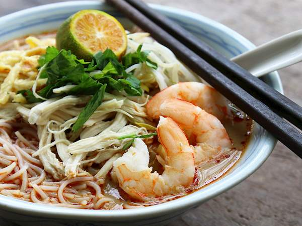

Tentang laksa Sarawak
Laksa ini berlainan daripada semua jenis laksa yang terdapat di Semenanjung Malaysia.
Laksa ini mengandungi sambal belacan yang memberikan warnanya seakan kemerahan. Laksa ini mudah didapati di negeri jiran seperti Brunei.
Jom kita lihat bahan-bahan yang diperlukan dan cara untuk membuatnya
Bahan-bahan yang diperlukan ialah:
1 paket mee bee-hoon
1 paket besar perencah laksa
1 biji kelapa parut
1/2 kg taugeh
1/2 kg isi ayam (tulang ayam untuk air rebusan ikut suka)
1/2 kg udang
3 biji telur ayam
Daun ketumbar
Limau nipis
Untuk sambal, kita perlukan:
2-3 sudu cili kering ditumbuk
Bawang merah dan putih ikut suka
Belacan sebesar 1/2 kotak mancis
Minyak masak untuk menumis
Cara-cara untuk membuatnya
Masukkan 5 cawan air rebus tulang ayam bersama-sama isi ayam ke dalam periuk.
Rebus isi ayam hingga masak kemudian diangkat.
Masukkan udang, rebus sebentar kemudian diangkat.
Masukkan perencah laksa Sarawak bersama air rebusan tadi, reneh/didih dengan api perlahan selama 20 minit.
Sementara menunggu, celur taugeh dan mee tadi. Goreng telur dadar, kupas udang dan siat isi ayam. Ketepikan.
Perahkan santan sebanyak 4 – 5 cawan ikut suka.
Sekarang bolehlah bee-hoon di hidang bersama-sama ayam yang disiat tadi, udang, taugeh, telur dadar dan daun ketumbar, limau dan sambal.
Siramkan laksa tersebut dengan kuah yang disediakan tadi dan siap!